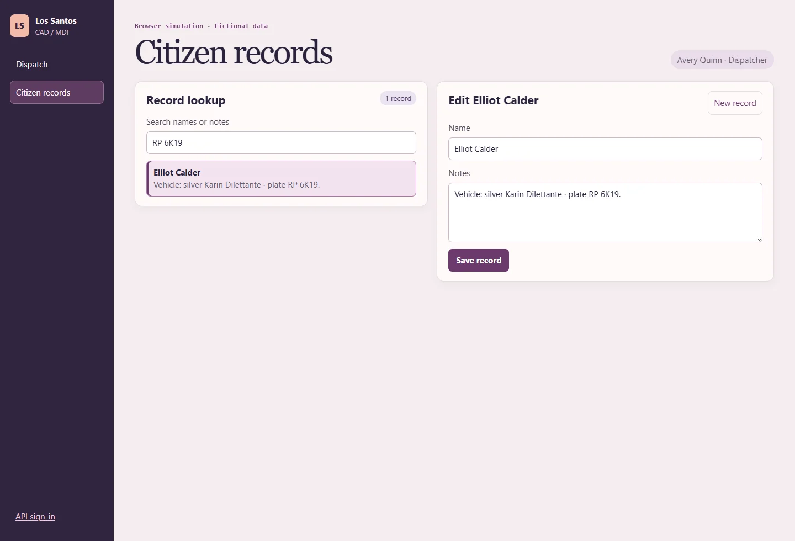
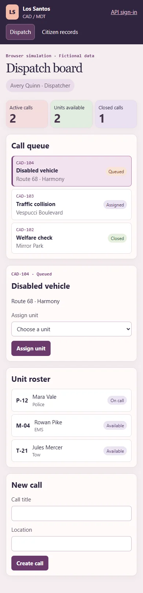

Featured project · Runtime screenshot
FiveM CAD/MDT
Create a fictional dispatch call, assign a unit, close an incident and search citizen records.
Local demo · Project lead
Public source access pending.
My contribution
I led development of this project.
Run the local demo
From the prepared project checkout, run these commands and open the address printed by the server. The repository may require access.
cd fivem-cad-mdt-system/frontend
npm ci
npm run dev -- --host 127.0.0.1


Problem
Roleplay dispatchers need a clear call workflow and readable unit and citizen information.
Architecture
A React and TypeScript simulation stores fictional calls, roster events and records in browser storage. A separate ASP.NET Core API implements sessions and account-scoped citizen records with EF Core and PostgreSQL.
Engineering decisions
- Model call closure and unit release together in the dispatch workflow.
- Derive API record ownership from the authenticated account and exclude older rows with unknown ownership.
Implemented workflow
- Create a roadside-assistance call and assign tow unit T-21.
- Close the call with an incident report and confirm that the unit becomes available.
- Find plate RP 6K19, edit citizen notes and reload to verify browser persistence.
Verified result
The handoff records frontend lint, TypeScript and production build, .NET Release build and Chrome workflow checks. Six of seven backend tests passed; Windows Application Control blocked the architecture test and migration runner.
- Source README, prepared screenshots and the completion handoff were reviewed. Source check results are attributed to that handoff.
Scope and next steps
- Dispatch, department roles and units are simulated. The API implements authentication and citizen records.
- There is no FiveM resource manifest, NUI bridge, ESX/QBCore adapter or live dispatch integration.
- Live API and migration verification remain blocked in the recorded environment. Public source access and hosting are pending.
Technology
React · TypeScript · ASP.NET Core · EF Core · PostgreSQL
Preview availability
Static runtime preview. No hosted interactive demo is available. The prepared improvements were verified in a local checkout and have not been pushed to GitHub; public source may differ from these captures. Use the repository documentation for the public version's setup requirements.
← Return to portfolio